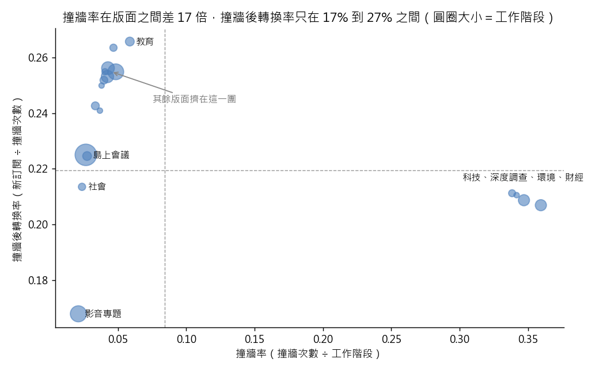

練習 05 - 多三百個訂閱推哪一環
在本單元中，會介紹第 5 題「訂閱長官要「下個月多 300 個新訂閱」，先算出該推哪一環」從頭到尾實際跑一次的方法、跑出來的數字，以及畫出來的圖。
這一頁是做完之後對答案用的。還沒動手的話，先回 Hub - 資料分析練習案例庫 找到這一題，照「怎麼做」那一欄自己跑一次再回來。
題目
有人會這樣問你：讀者事業處主管說：「下個月要多 300 個新訂閱。到底是要衝流量、把更多稿子放進付費牆，還是想辦法讓撞到牆的人更願意付錢？」
| 難度 | 入門 |
| 組別 | 第 2 組：把經營問題拆成算得出來的東西 |
| 用哪張表 | content_monthly_flat（L1：content_monthly_2024_10.csv） |
| 對應單元 | 指標樹 把營收拆成可以動的東西 |
方法
畫一棵指標樹並且真的算出來：新訂閱數 = 工作階段數 × 撞牆率（paywall_hit_cnt ÷ sessions）× 撞牆轉換率（conversion_cnt ÷ paywall_hit_cnt）。先用主鍵去重，整站算一次當基準，再按版面（section_name）與是否付費（is_paywalled）各拆一次，看三個乘數分別差幾倍；最後回推「其他兩環不動，這一環要動幾個百分點才生得出 300 個訂閱」。用 Python，因為指標樹是一層接一層往下拆、最後還要把三個乘數乘回去驗算，pandas 一路 assign 接著寫最省事也最好檢查。
程式
這一題用 Python，整支程式如下。資料放在 dist/L1 與 dist/L2 兩個資料夾。
from _kmg import *
r = R(5, "訂閱長官要「下個月多 300 個新訂閱」，先算出該推哪一環")
raw = flat()
f = dedupe(raw)
S, H, C = int(f["sessions"].sum()), int(f["paywall_hit_cnt"].sum()), int(f["conversion_cnt"].sum())
r.chk("工作階段", 780431, S)
r.chk("撞牆次數", 65900, H)
r.chk("新訂閱", 14463, C)
r.chk("撞牆率", 0.084, H / S, tol=0.0006)
r.chk("撞牆轉換率", 0.219, C / H, tol=0.0006)
r.chk("三個乘數乘回去", C, round(S * (H / S) * (C / H)))
g = f.groupby("section_name").agg(s=("sessions", "sum"), h=("paywall_hit_cnt", "sum"), c=("conversion_cnt", "sum"))
g["hr"], g["cr"] = g["h"] / g["s"], g["c"] / g["h"]
for sec, e in [("科技", 0.360), ("深度調查", 0.347), ("影音專題", 0.021), ("島上會議", 0.027)]:
r.chk("撞牆率 " + sec, e, float(g.loc[sec, "hr"]), tol=0.0006)
r.chk("撞牆率最大÷最小（倍）", 17, float(g["hr"].max() / g["hr"].min()), tol=0.6)
r.chk("撞牆轉換率 最低版面", 0.168, float(g["cr"].min()), tol=0.0006)
r.chk("撞牆轉換率 最高版面", 0.266, float(g["cr"].max()), tol=0.0006)
r.chk("撞牆率那一環要增加（百分點）", 0.2, 300 / (S * (C / H)) * 100, tol=0.06)
r.chk("撞牆轉換率那一環要拉到", 0.224, (C + 300) / H, tol=0.0006)
top4 = g.sort_values("hr", ascending=False).head(4)
rest = g.drop(top4.index)
r.chk("撞牆率前四版面的撞牆轉換率（合併計算）", 0.21, float(top4["c"].sum() / top4["h"].sum()), tol=0.01)
r.chk("其餘版面的撞牆轉換率（合併計算）", 0.25, float(rest["c"].sum() / rest["h"].sum()), tol=0.015)
r.note("撞牆率最高的四個版面是%s；各版面撞牆轉換率的平均，前四個 %.3f、其餘 %.3f" % (
"、".join(top4.index), top4["cr"].mean(), rest["cr"].mean()))
over = int(raw["conversion_cnt"].sum()) - C
r.chk("不去重多算的訂閱", 40, over)
r.pit(over > 0, "沒有先去重，新訂閱會多算 %d 筆" % over)
keys = len(raw"content_id", "stat_month".drop_duplicates())
r.sc(len(raw) == 1444 and keys == 1438 and round(S * (H / S) * (C / H)) == C,
"表有 %d 列、主鍵只有 %d 組，一比就知道要先去重；三個乘數乘回去是 %s，等於新訂閱總數" % (
len(raw), keys, format(round(S * (H / S) * (C / H)), ",")))
fig, ax = plt.subplots(figsize=(8, 5))
ax.scatter(g["hr"], g["cr"], s=g["s"] / 400, alpha=0.6, color="#4f81bd")
high4 = g.sort_values("hr", ascending=False).head(4)
for sec in ["影音專題", "島上會議", "社會", "教育"]:
ax.annotate(sec, (g.loc[sec, "hr"], g.loc[sec, "cr"]), fontsize=9, xytext=(6, -3), textcoords="offset points")
ax.annotate("、".join(high4.index), (high4["hr"].mean(), high4["cr"].max()), fontsize=9, xytext=(0, 12),
textcoords="offset points", ha="center")
ax.annotate("其餘版面擠在這一團", (0.045, 0.255), fontsize=9, xytext=(40, -30), textcoords="offset points",
arrowprops={"arrowstyle": "->", "color": "#888888"}, color="#666666")
ax.axhline(C / H, color="#999999", lw=0.8, ls="--")
ax.axvline(H / S, color="#999999", lw=0.8, ls="--")
ax.set_xlabel("撞牆率（撞牆次數 ÷ 工作階段）")
ax.set_ylabel("撞牆後轉換率（新訂閱 ÷ 撞牆次數）")
ax.set_title("撞牆率在版面之間差 17 倍，撞牆後轉換率只在 17% 到 27% 之間（圓圈大小＝工作階段）")
save_fig(fig, "ex05_metric_tree.png")
r.save()
程式裡的 r.chk(項目, 預期值, 實算值) 是對照檢查，把入口頁寫的數字跟實際算出來的放在一起比；r.pit 記錄坑有沒有出現，r.sc 記錄自己驗那一步有沒有效。畫圖的部分在程式最後面。
程式開頭的 from _kmg import * 載入共用的讀檔、去重、換幣別與畫圖函式，內容在 練習 01 - 月會上的則數對不對 的「共用的讀檔函式」那一段。
結果
全站 780,431 段工作階段 → 65,900 次撞牆（8.4%）→ 14,463 個新訂閱（21.9%），三個數乘回去要剛好回到 14,463。拆開看，撞牆率在版面之間差 17 倍（科技 36.0%、深度調查 34.7%，對照影音專題 2.1%、島上會議 2.7%），撞牆後的轉換率卻全部擠在 16.8% 到 26.6% 之間。要多 300 個訂閱，撞牆率那一環只要動 0.2 個百分點，轉換率那一環卻要從 21.9% 拉到 22.4%——前者明顯比較好動。但資料也給了反面訊號：撞牆率最高的那四個版面，撞牆後的轉換率反而略低（約 21%，其他版面在 25% 上下），代表「多擋人」會邊際遞減，不能一路推到底。
實際跑出來的數字
下表每一列都是程式實際算出來的值，18 項全部跟上面那段文字對得起來。
| 項目 | 實跑結果 |
|---|---|
| 工作階段 | 780431 |
| 撞牆次數 | 65900 |
| 新訂閱 | 14463 |
| 撞牆率 | 0.0844 |
| 撞牆轉換率 | 0.2195 |
| 三個乘數乘回去 | 14463 |
| 撞牆率 科技 | 0.3595 |
| 撞牆率 深度調查 | 0.3471 |
| 撞牆率 影音專題 | 0.0211 |
| 撞牆率 島上會議 | 0.0266 |
| 撞牆率最大÷最小（倍） | 17.0473 |
| 撞牆轉換率 最低版面 | 0.1678 |
| 撞牆轉換率 最高版面 | 0.2658 |
| 撞牆率那一環要增加（百分點） | 0.1752 |
| 撞牆轉換率那一環要拉到 | 0.224 |
| 撞牆率前四版面的撞牆轉換率（合併計算） | 0.2085 |
| 其餘版面的撞牆轉換率（合併計算） | 0.2397 |
| 不去重多算的訂閱 | 40 |
補充
- 撞牆率最高的四個版面是科技、深度調查、環境、財經；各版面撞牆轉換率的平均，前四個 0.209、其餘 0.240
圖表

每一個圓是一個版面，橫軸是撞牆率，縱軸是撞牆後轉換率，圓越大工作階段越多。版面左右拉得很開、上下擠得很緊；右下角撞牆率最高的四個版面，撞牆後轉換率反而略低。
這題的坑，實際跑的時候有沒有出現
重複列。這份月報表有 1,444 列，卻只有 1,438 則內容，六則因為重送而有兩列，只有 ingest_ts 不一樣。不去重總訂閱會多算 40 筆，任何「每則平均」都被稀釋。這次只差 0.3%，看起來無所謂，但你事前不會知道下一份資料差多少，所以「主鍵唯一」要當成動手前的第一個檢查，不是出事才回來補。
實際跑的結果：沒有先去重，新訂閱會多算 40 筆。
自己驗那一步抓不抓得到錯
先確認 len(df) 和 df.drop_duplicates(subset=['content_id','stat_month']) 的列數一樣（跑出 1,444 對 1,438 就是還沒去重），再把 工作階段數 × 撞牆率 × 撞牆轉換率 乘回去，必須等於你自己算的 14,463；對不上就是中間某一層用錯了分母。
實際跑的結果：表有 1444 列、主鍵只有 1438 組，一比就知道要先去重；三個乘數乘回去是 14,463，等於新訂閱總數。
接著做
上一題 練習 04 - 深度報導值不值得做、下一題 練習 06 - banner 賣廣告還是推訂閱，或回到 Hub - 資料分析練習案例庫 挑別的題目。
學生版｜更新於 2026-09-13 10:38